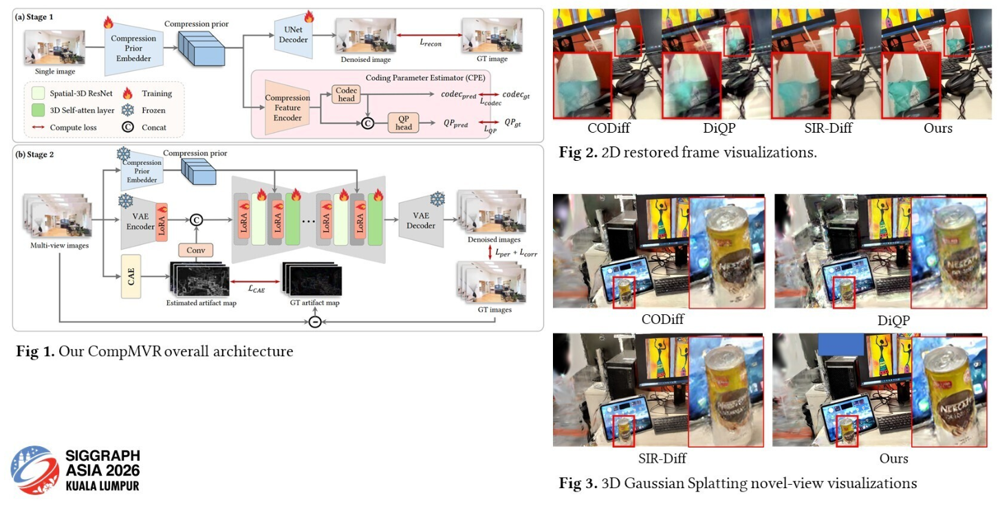
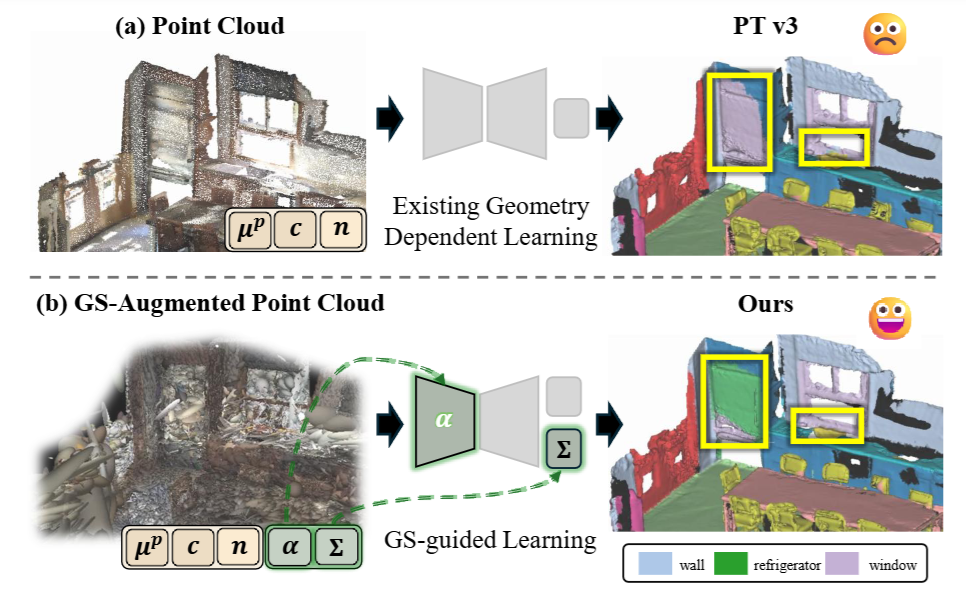
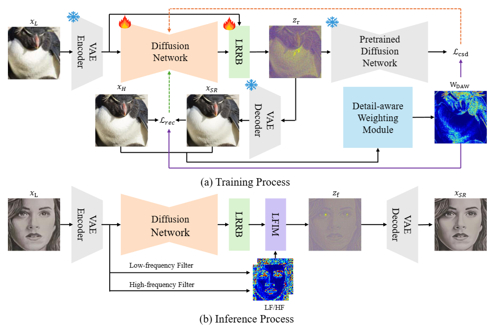
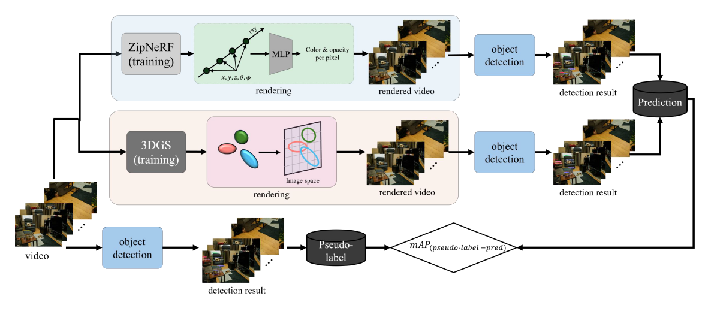
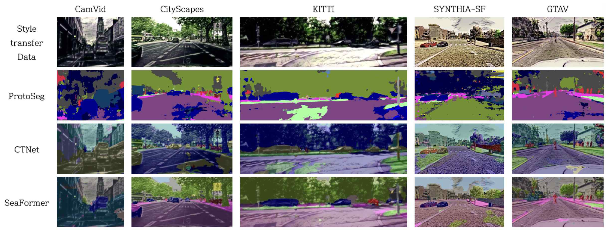

|
Chaewon Moon I'm a master's student in Video Intelligence Lab in Department of Computer Science and Engineering at Kyungpook National University. studying 3D perception and 3D reconstruction. My research focuses on 3D reconstruction, 3D perception, and diffusion models. |

|
Research* denotes equal contribution. |
|
 |
CompMVR: Compression-Aware Multi-View Restoration Using Diffusion Models for Geometrically Consistent 3D Reconstruction
Dong-hwi Kim* Chaewon Moon*, Hojun Song, Dongbeom Kim, Junyeong Jang, Aro Kim, Gahyeon Kim, Heejung Choi, Jehee Kim, Gianella Cravioto, Sohyun Lee, Gyeongjin Choi, EunHye Jeong, Soo Ye Kim†, Jaehyup Lee†, Sang-hyo Park† SIGGRAPH Asia, 2026 Conditionally Accepted, camera-ready in preparation Compression-aware multi-view restoration with diffusion models for geometrically consistent 3D reconstruction. |
|
 |
G2P: Gaussian-to-Point Attribute Alignment for Boundary-Aware 3D Segmentation
Hojun Song*, Chae-yeong Song*, Jeong-hun Hong, Chaewon Moon, Soo Ye Kim, Yiyi Liao, Jaehyup Lee, Sang-hyo Park† ECCV, 2026 (Poster) G2P aligns 3D Gaussian attributes with point clouds to enhance appearance-aware learning and boundary localization, improving segmentation of geometrically ambiguous 3D scenes. |
|
 |
FiDeSR: High-Fidelity and Detail-Preserving One-Step Diffusion Super-Resolution
Aro Kim*, Myeongjin Jang*, Chaewon Moon, Youngjin Shin, Jinwoo Jeong, Sang-hyo Park† CVPR, 2026 (Poster) One-step diffusion super-resolution that preserves high-frequency detail and fidelity. |
|
 |
Analysis of Object Detection Performance According to Implicit and Explicit Representations in Novel View Synthesis
Chaewon Moon, Aro Kim, Boseong Baek, Sang-hyo Park† SPIE, 2026 How implicit vs. explicit scene representations in novel view synthesis affect downstream object detection performance. |
|
 |
A Study on the Vulnerability of Semantic Segmentation Model to Data Transformation
Chaewon Moon, Dong-hwi Kim, Dabin Kang, Sang-hyo Park† Journal of Broadcast Engineering (방송공학회논문지), 2024 An analysis of how data transformations affect the robustness of semantic segmentation models. |
| Template adapted from Jon Barron's public academic website. |